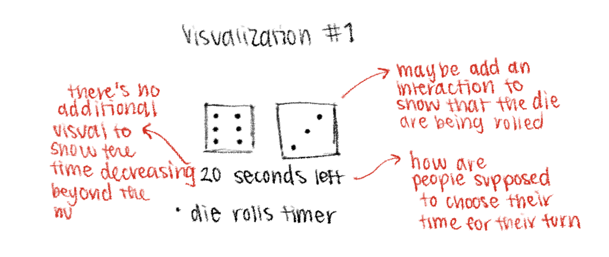
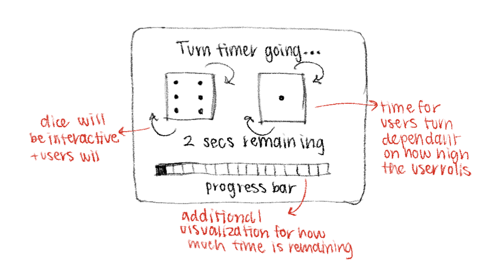
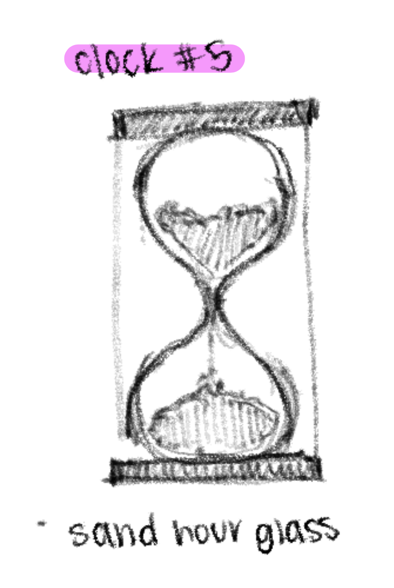
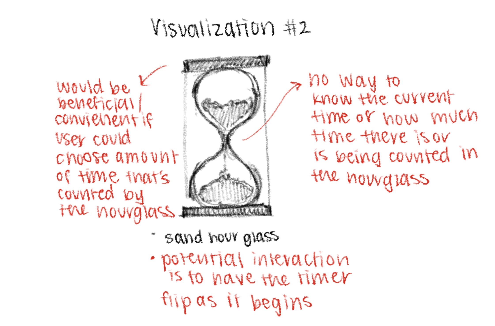
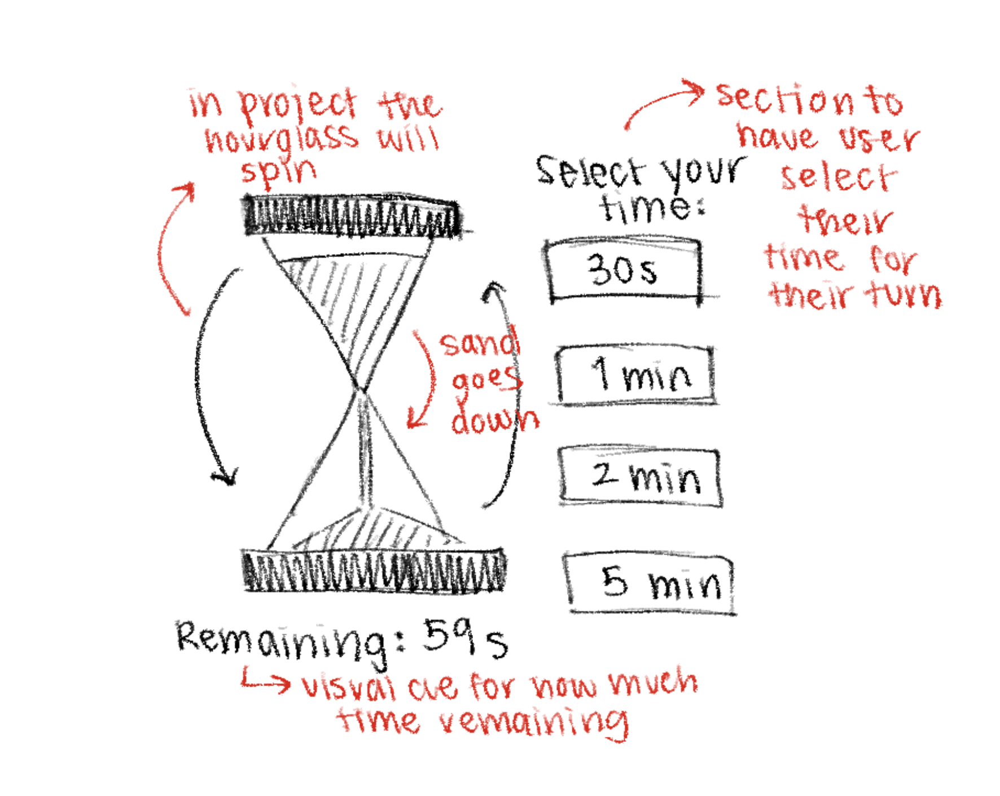
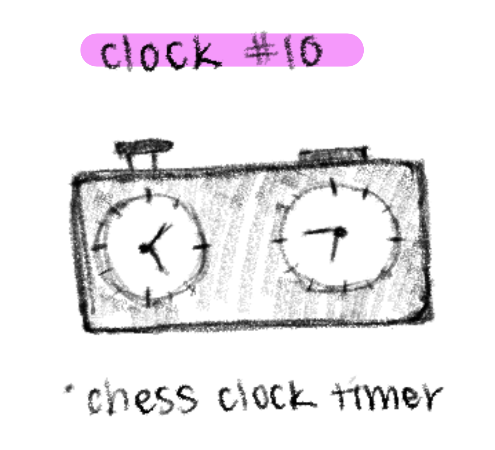
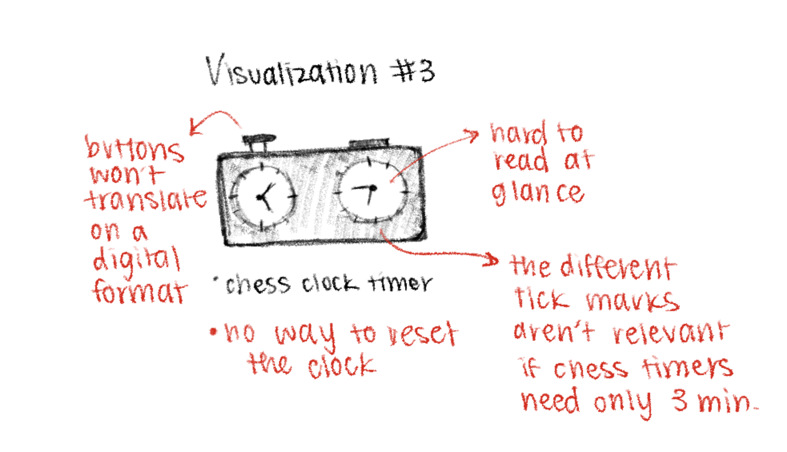
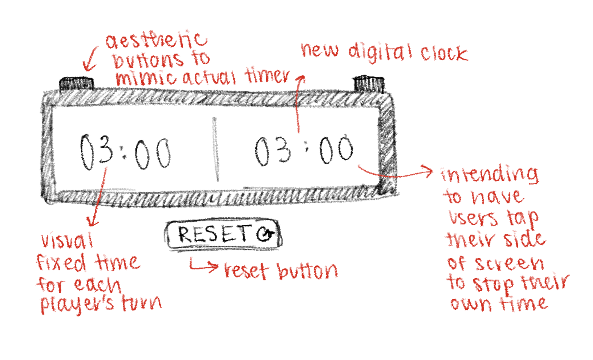

Sketch narrative
- Context: This sketch is designed for turn-based board and dice games where players need gentle time constraints without disrupting the social flow of play. It is meant to be used at a shared table where everyone can glance at the timer at once.
- Design decisions: I used dice imagery to visually anchor the clock in its game context and make the interface feel playful rather than intense. I represented time primarily as a segmented progress bar so remaining time can be understood at a glance without reading exact seconds. I chose high-contrast colors to improve visibility in group settings and low-attention moments.
- Future work: I would like to add support for adjustable turn lengths or per-player timing. And I could possibly introduce optional visual cues as the turn nears completion.
Reflection: This clock helped me explore how time can be communicated without relying heavily on precise numerical values. Designing the segmented progress bar pushed me to think about time as a sequence of discrete units rather than a continuous countdown, which aligns well with turn-based board games. I learned that visual metaphors, like dice imagery, can quickly communicate context and intent, especially in shared environments. One challenge was balancing playfulness with clarity, but iterative adjustments to contrast and layout improved readability. Overall, this clock works well for casual, social gameplay, though it could benefit from more configuration options.
Sketch evolution
I wasn't sure what direction I was initially going with for the clocks, which is why my sketches are vague. Through discussions, I realized I wanted to portray clocks/timers in the context of games/board games. My original set of images therefore did not contain any reference to die.


Sketch narrative
- Context: I designed for board games that traditionally use small physical hourglass timers to limit player actions. I intended for tabletop play where players need a shared, intuitive sense of time without reading exact numbers..
- Design decisions: I used an hourglass metaphor to reflect familiar board-game timers and make the digital version feel recognizable and approachable. I tried to represent time through falling sand to emphasize duration and urgency rather than precision. I made the hourglass itself clickable to start the timer, reinforcing the feeling of flipping a physical object. I made sure to include preset durations to match common board-game timer lengths while keeping numeric time secondary.
- Future work: I'd like to add visual cues when the timer finishes to better support group play. Also, I would want to allow multiple hourglasses to run in parallel for games that require simultaneous timed actions.
Reflection: The hourglass timer emphasized representing time as a physical, intuitive process rather than exact measurement. Translating the familiar experience of a physical hourglass into a digital interaction taught me the importance of motion and metaphor in interface design. I found that making the hourglass itself interactive strengthened the connection between user action and time progression. A challenge was ensuring the animation felt smooth and readable without becoming distracting. This design is effective for board games and light timing scenarios, though future improvements could focus on richer animation detail or expanded duration options.
Sketch evolution



Sketch narrative
- Context: I designed this clock for competitive, turn-based activities such as chess, debates, or timed problem-solving. I intended for scenarios where fairness, clarity, and precision are important and critical for games.
- Design decisions: I attempted to model the layout after a physical chess clock with two side-by-side displays. For the visualization, I used large digital numerals to maximize readability and reduce ambiguity. I also tried to mirror real chess-clock interaction by having players click their side to pass the turn and start the opponent’s timer.
- Future work: In the future, I'd add increment or delay timing modes commonly used in competitive chess. I'd also like to adapt the design for smaller screens or mobile use.
Reflection: The chess clock was the most structured and system-oriented design, requiring careful attention to fairness, precision, and interaction logic. Modeling it after a physical chess clock helped ground the design and reduce usability friction. I learned how important symmetry, clear state indicators, and minimal visual noise are in competitive contexts. Managing turn switching and ensuring accurate timing highlighted the complexity behind seemingly simple interactions. This clock feels the most complete and robust, and it best demonstrates how thoughtful design choices can support high-stakes, time-sensitive decision-making.
Sketch evolution



Homework 5 Analysis
Why did you choose the dataset and story? I chose Seahawks receiving data because it’s locally relevant and emotionally resonant, especially at UW, where a lot of people have been following Seattle sports. That made the dataset immediately relatable rather than abstract. But more importantly, once I looked at the numbers, a clear pattern jumped out: the offense wasn’t evenly distributed. A few players were responsible for the majority of receiving yards. That concentration created a natural story. Instead of just showing player stats, I framed it as a question about balance versus dependency. So the dataset wasn’t just interesting, it revealed a structural pattern worth communicating.
Why did you choose that title? The title: “Seattle’s offense isn’t balanced — it’s concentrated.” was intentionally declarative and interpretive. I didn’t want a neutral title like “Receiving Yards by Player.” That would make the visualization purely descriptive. Instead, the title makes a claim. It signals that the visualization is arguing something: that yard production is concentrated among a small group. That framing helps viewers know what to look for before they even process the graphic.
Is it author-driven or user-driven? What visualization genre is it? This visualization sits strongly on the author-driven side of the spectrum described by Segel and Heer. The scenes are arranged in a deliberate, linear structure: the title makes a claim, the large percentage quantifies it, and the stacked bar provides the supporting evidence. This reflects the characteristics of an author-driven narrative—heavy messaging, efficient communication, and a prescribed ordering of attention. The viewer is not forming open-ended hypotheses; instead, they are guided toward a specific conclusion about offensive concentration. However, the hover tooltips introduce a light reader-driven layer. They allow drill-down into individual values and reveal which players fall into the grouped “Everyone else” category. This interactivity supports exploration without disrupting the narrative arc. In terms of genre, it most closely aligns with the “Annotated Chart” or “Partitioned Poster” narrative formats discussed in class, where a strong visual anchor is combined with structured explanatory elements to communicate a focused argument.
If you can walk someone through this visualization in a talk, how would you describe it? / What is the story being communicated? If I were walking someone through it in a talk, I would start by pointing to the title and explaining that the goal is to evaluate whether the offense is evenly distributed. Then I would draw attention to the stacked bar, explaining that length encodes proportion of total receiving yards. The top three segments immediately dominate visually, which reinforces the claim made in the title. The badge quantifies that dominance by presenting the combined percentage. Finally, I would mention that the “Everyone else” grouping prevents clutter but can be explored through hovering, which keeps the chart clean while still allowing depth. The overall story is that production appears broad at first glance, but is statistically concentrated among a few players.
What are the main design principles that guided your encoding choices? Several design principles guided my encoding decisions. I relied on length as the primary encoding because it allows for quick and accurate comparison across players, especially when the segments are aligned on a common baseline. Color was used intentionally to create hierarchy rather than encode additional variables. The top three players are visually distinct to draw focus, while the remaining contributors are muted to reduce competition and reinforce the main takeaway. Sorting the segments from largest to smallest makes the concentration immediately visible and lowers the cognitive effort needed to interpret rank. Grouping minor contributors into a single segment supports visual economy by preventing clutter and fragmentation, while still representing their combined impact. The overall layout also follows a clear hierarchy, title, key percentage badge, stacked bar, then tooltip, which helps guide attention in a structured way and supports clarity and memorability.
How did you ensure clarity, hierarchy of concepts, and memorability? Clarity and hierarchy were built through structure rather than decoration. The layout follows a deliberate order: the interpretive title first, then the bold percentage badge as a takeaway statistic, and then the stacked bar as visual evidence. Supporting details like exact yardage are revealed only on hover, which keeps the static view clean. This layering creates a clear conceptual hierarchy, the claim, evidence, detail. To support memorability, I emphasized one dominant idea and reinforced it visually and numerically. The strong contrast between navy and Seahawks green, along with the large percentage figure, helps anchor the takeaway in memory.